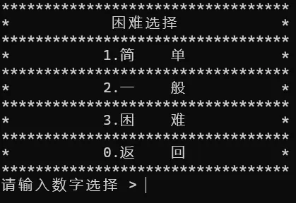
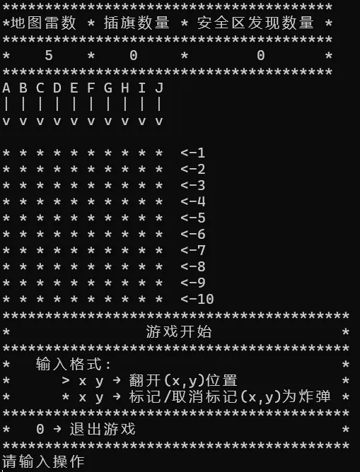
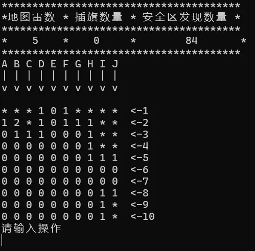
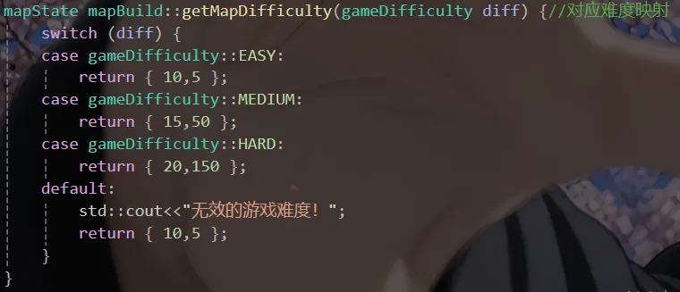
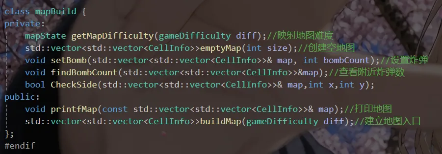
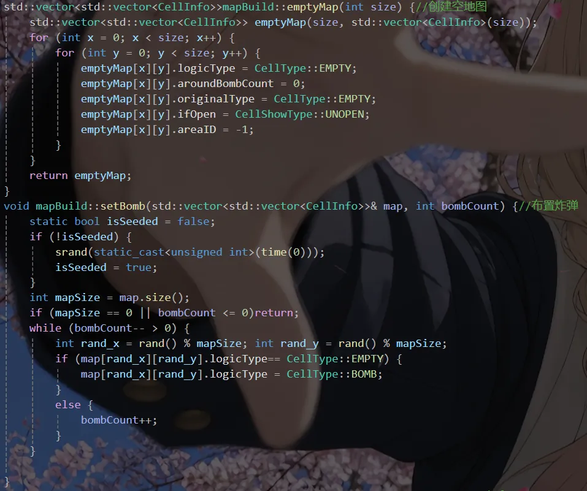

Case 01 / 08
扫雷
尝试的第一个游戏项目，通过输入坐标来完成操作。规则照搬经典扫雷，重点是把面向对象和多文件开发练一遍。
概览与技术栈
这是我真正意义上动手写的第一个游戏项目。规则照搬经典扫雷——翻开格子、避开地雷、靠周围数字推断
雷的位置——只是把画面换成了控制台：地图用字符打印出来，操作靠输入坐标完成，比如
> x y 翻开一格、* x y 插旗、输入 0 退出。
做完回头看，这个项目最大的收获其实不是扫雷本身，而是第一次把「面向对象」和「多文件」用起来。 以前写代码都是把所有代码堆在 main 或者同一个文件自定义的函数里，这次把地图相关的逻辑收进一个 mapBuild 类，类的声明写在 头文件、实现写在源文件，改一处逻辑不用再从头翻到尾。
毛病也不少。随机布雷用的是 srand(time(0)) 加 rand()，同一秒内重开会
得到一样的地图；输入的容错做得很少，乱输坐标会把程序带进一个奇怪的状态。不过它至少能完整跑完
一局，把「输入 → 处理 → 输出」这条链走通了。
技术栈
- 语言
- C++（控制台程序，无图形界面）
- 数据结构
- 二维数组存地图，枚举与结构体定义格子类型
- 难度选择
- 按难度映射到不同的地图边长与雷数
- 架构
- 面向对象 + 多文件
- 工具
- Visual Studio 2022
截图与演示
下面三张是实际运行时的控制台画面，按一局游戏的顺序排：先选难度，再看清指令格式，然后进入对局。


> x y 和 * x y 的区别。

技术文档
代码量不大，但有三处是当时反复改过的：难度映射表、类的成员划分、以及地图的初始化与布雷。 下面三张就是这三部分的代码截图，完整实现放在仓库里。
现在再看这套划分还将就，但想加一个「撤销上一步」 就得同时动好几个成员函数。如果重写一遍，我会使用MVC架构。


